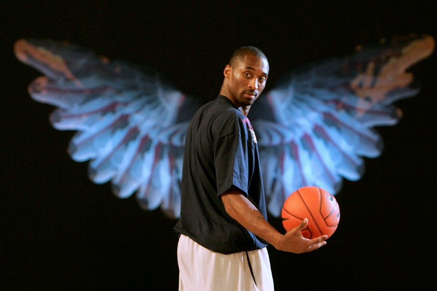

Work Ethic
Kobe was a hardworker. A legend. This is why the whole world is still reeling from his death. Those who know Bryant know about his crazy habits. He once claimed he could function on just a few hours of sleep and preferred to wake up in the early morning even if he didn’t go to bed until late. Bryant always put up shots and worked out before his fellow NBA players were even awake In Bryant's two-decade career with the Los Angeles Lakers, Bryant already had championships, scoring titles, and MVPs to his name, but with basketball in his rearview mirror, Bryant turned to filmmaking and in 2018 won an Oscar for Best Animated Short Film. Tales of Bryant's work ethic have become folklore. From his early morning workouts, to marathon shooting sessions, to a relentless desire to improve himself.
 Makes us wonder, How is it that people can mourn so deeply over someone they have never even met?
The Mamba in all of us...
On some level we all feel that we haven’t given our best in everything we’ve done — whether that’s at home, at our job, with our hobbies, etc. Watching Bryant grow up in front our eyes and witnessing his relentless work ethic first-hand reassured us that it’s possible to give every ounce of ourselves to our craft in order to be great at whatever we do.
Bryant watched film of himself at halftime
This desire to improve had no off-switch either. As ESPN’s Jackie McMullan explains, Bryant even took time during games to look at sequences from the first half, highlight the deficiencies, and make in-game adjustments within the second half.
“He often corrals teammates, fires up the laptop, and shows them precisely how they can carve out easier shots for themselves.” — Jackie McMullan
Notice how rapid this iterative process is for Bryant.
The mental muscle of seeking improvement fires so quickly that he is able to adjust his play before the buzzer even sounds.
Revisiting the championship loss with UConn’s Katie Lou Samuelson
Halftime adjustments are one thing, but what happens after a demoralizing loss? After all, losing comes with a lot of emotional baggage, especially if elimination is the result.
That’s exactly what former UConn star Katie Lou Samuelson faced when her Huskies lost to the Notre Dame Fight Irish at the hands of a last-second shot from Arike Ogunbowale during the 2018 Final Four.
When Bryant and Samuelson met later that summer, Bryant asked if she had reviewed the tape from that final game, to which Samuelson replied that she hadn’t. She wasn’t ready to face the pain. After being one second away from the National Championship, could you blame her?
“You’ve got to face it,” Bryant said. “It’s the only way to learn from it.”